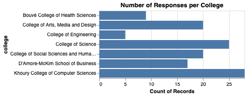
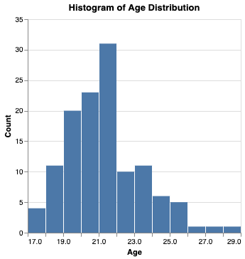

Northeastern University Gym-Goers and the Relationship Between Academic Discipline and Strength
Project Introduction
vv
Overall Data Summary Graph
This graph shows a scatter plot that measures bicep curl capabilitie against bench press capabilities by college. The data shows a correlation between bicep curl and bench press strength and generally shows that Khoury college has stronger students.
Explanation of the Below Visualizations Static (Static Visualization 1)
vv
Female One-Rep Bicep Curl Max by College
Female One-Rep Bench Press Max by College
Male One-Rep Bicep Curl Max by College
Male One-Rep Bench Press Max by College
Explanation of the Below Visualizations Static (Static Visualization 2)
vv
Number of Responses Per College

Explanation of the Below Visualizations Static (Static Visualization 3)
vv
Histogram of Age Distribution

Explanation of the Below Visualizations Static (Interactive Visualization 1)
vv
Explanation of the Below Visualizations Static (Interactive Visualization 2)